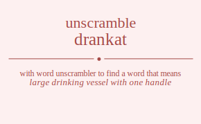

The word found after unscrambling drankat means that large drinking vessel with one handle, .

The word found after unscrambling drankat means that large drinking vessel with one handle, .
You can also find solutions for different combinations of letters in drankat like drankat drankta dranakt dranatk drantka drantak draknat draknta drakant drakatn draktna draktan draankt draantk draaknt draaktn draatnk draatkn dratnka dratnak dratkna dratkan dratank dratakn drnakat drnakta drnaakt drnaatk drnatka drnatak drnkaat drnkata drnkaat drnkata drnktaa drnktaa drnaakt drnaatk drnakat drnakta drnatak drnatka drntaka drntaak drntkaa drntkaa drntaak drntaka drkanat drkanta drkaant drkaatn drkatna drkatan drknaat drknata drknaat drknata drkntaa drkntaa drkaant drkaatn drkanat drkanta drkatan drkatna drktana drktaan drktnaa drktnaa drktaan drktana draankt draantk draaknt draaktn draatnk draatkn dranakt dranatk drankat drankta drantak drantka drakant drakatn draknat draknta draktan draktna dratank dratakn dratnak dratnka dratkan dratkna drtanka drtanak drtakna drtakan drtaank drtaakn drtnaka drtnaak drtnkaa drtnkaa drtnaak drtnaka drtkana drtkaan drtknaa drtknaa drtkaan drtkana drtaank drtaakn drtanak drtanka drtakan drtakna darnkat darnkta darnakt darnatk darntka darntak darknat darknta darkant darkatn darktna darktan darankt darantk daraknt daraktn daratnk daratkn dartnka dartnak dartkna dartkan dartank dartakn danrkat danrkta danrakt danratk danrtka danrtak dankrat dankrta dankart dankatr danktra danktar danarkt danartk danakrt danaktr danatrk danatkr dantrka dantrak dantkra dantkar dantark dantakr dakrnat dakrnta dakrant dakratn dakrtna dakrtan daknrat daknrta daknart daknatr dakntra dakntar dakarnt dakartn dakanrt dakantr dakatrn dakatnr daktrna daktran daktnra daktnar daktarn daktanr daarnkt daarntk daarknt daarktn daartnk daartkn daanrkt daanrtk daankrt daanktr daantrk daantkr daakrnt daakrtn daaknrt daakntr daaktrn daaktnr daatrnk daatrkn daatnrk daatnkr daatkrn daatknr datrnka datrnak datrkna datrkan datrank datrakn datnrka datnrak datnkra datnkar datnark datnakr datkrna datkran datknra datknar datkarn datkanr datarnk datarkn datanrk datankr datakrn dataknr dnrakat dnrakta dnraakt dnraatk dnratka dnratak dnrkaat dnrkata dnrkaat dnrkata dnrktaa dnrktaa dnraakt dnraatk dnrakat dnrakta dnratak dnratka dnrtaka dnrtaak dnrtkaa dnrtkaa dnrtaak dnrtaka dnarkat dnarkta dnarakt dnaratk dnartka dnartak dnakrat dnakrta dnakart dnakatr dnaktra dnaktar dnaarkt dnaartk dnaakrt dnaaktr dnaatrk dnaatkr dnatrka dnatrak dnatkra dnatkar dnatark dnatakr dnkraat dnkrata dnkraat dnkrata dnkrtaa dnkrtaa dnkarat dnkarta dnkaart dnkaatr dnkatra dnkatar dnkarat dnkarta dnkaart dnkaatr dnkatra dnkatar dnktraa dnktraa dnktara dnktaar dnktara dnktaar dnarakt dnaratk dnarkat dnarkta dnartak dnartka dnaarkt dnaartk dnaakrt dnaaktr dnaatrk dnaatkr dnakrat dnakrta dnakart dnakatr dnaktra dnaktar dnatrak dnatrka dnatark dnatakr dnatkra dnatkar dntraka dntraak dntrkaa dntrkaa dntraak dntraka dntarka dntarak dntakra dntakar dntaark dntaakr dntkraa dntkraa dntkara dntkaar dntkara dntkaar dntarak dntarka dntaark dntaakr dntakra dntakar dkranat dkranta dkraant dkraatn dkratna dkratan dkrnaat dkrnata dkrnaat dkrnata dkrntaa dkrntaa dkraant dkraatn dkranat dkranta dkratan dkratna dkrtana dkrtaan dkrtnaa dkrtnaa dkrtaan dkrtana dkarnat dkarnta dkarant dkaratn dkartna dkartan dkanrat dkanrta dkanart dkanatr dkantra dkantar dkaarnt dkaartn dkaanrt dkaantr dkaatrn dkaatnr dkatrna dkatran dkatnra dkatnar dkatarn dkatanr dknraat dknrata dknraat dknrata dknrtaa dknrtaa dknarat dknarta dknaart dknaatr dknatra dknatar dknarat dknarta dknaart dknaatr dknatra dknatar dkntraa dkntraa dkntara dkntaar dkntara dkntaar dkarant dkaratn dkarnat dkarnta dkartan dkartna dkaarnt dkaartn dkaanrt dkaantr dkaatrn dkaatnr dkanrat dkanrta dkanart dkanatr dkantra dkantar dkatran dkatrna dkatarn dkatanr dkatnra dkatnar dktrana dktraan dktrnaa dktrnaa dktraan dktrana dktarna dktaran dktanra dktanar dktaarn dktaanr dktnraa dktnraa dktnara dktnaar dktnara dktnaar dktaran dktarna dktaarn dktaanr dktanra dktanar darankt darantk daraknt daraktn daratnk daratkn darnakt darnatk darnkat darnkta darntak darntka darkant darkatn darknat darknta darktan darktna dartank dartakn dartnak dartnka dartkan dartkna daarnkt daarntk daarknt daarktn daartnk daartkn daanrkt daanrtk daankrt daanktr daantrk daantkr daakrnt daakrtn daaknrt daakntr daaktrn daaktnr daatrnk daatrkn daatnrk daatnkr daatkrn daatknr danrakt danratk danrkat danrkta danrtak danrtka danarkt danartk danakrt danaktr danatrk danatkr dankrat dankrta dankart dankatr danktra danktar dantrak dantrka dantark dantakr dantkra dantkar dakrant dakratn dakrnat dakrnta dakrtan dakrtna dakarnt dakartn dakanrt dakantr dakatrn dakatnr daknrat daknrta daknart daknatr dakntra dakntar daktran daktrna daktarn daktanr daktnra daktnar datrank datrakn datrnak datrnka datrkan datrkna datarnk datarkn datanrk datankr datakrn dataknr datnrak datnrka datnark datnakr datnkra datnkar datkran datkrna datkarn datkanr datknra datknar dtranka dtranak dtrakna dtrakan dtraank dtraakn dtrnaka dtrnaak dtrnkaa dtrnkaa dtrnaak dtrnaka dtrkana dtrkaan dtrknaa dtrknaa dtrkaan dtrkana dtraank dtraakn dtranak dtranka dtrakan dtrakna dtarnka dtarnak dtarkna dtarkan dtarank dtarakn dtanrka dtanrak dtankra dtankar dtanark dtanakr dtakrna dtakran dtaknra dtaknar dtakarn dtakanr dtaarnk dtaarkn dtaanrk dtaankr dtaakrn dtaaknr dtnraka dtnraak dtnrkaa dtnrkaa dtnraak dtnraka dtnarka dtnarak dtnakra dtnakar dtnaark dtnaakr dtnkraa dtnkraa dtnkara dtnkaar dtnkara dtnkaar dtnarak dtnarka dtnaark dtnaakr dtnakra dtnakar dtkrana dtkraan dtkrnaa dtkrnaa dtkraan dtkrana dtkarna dtkaran dtkanra dtkanar dtkaarn dtkaanr dtknraa dtknraa dtknara dtknaar dtknara dtknaar dtkaran dtkarna dtkaarn dtkaanr dtkanra dtkanar dtarank dtarakn dtarnak dtarnka dtarkan dtarkna dtaarnk dtaarkn dtaanrk dtaankr dtaakrn dtaaknr dtanrak dtanrka dtanark dtanakr dtankra dtankar dtakran dtakrna dtakarn dtakanr dtaknra dtaknar rdankat rdankta rdanakt rdanatk rdantka rdantak rdaknat rdaknta rdakant rdakatn rdaktna rdaktan rdaankt rdaantk rdaaknt rdaaktn rdaatnk rdaatkn rdatnka rdatnak rdatkna rdatkan rdatank rdatakn rdnakat rdnakta rdnaakt rdnaatk rdnatka rdnatak rdnkaat rdnkata rdnkaat rdnkata rdnktaa rdnktaa rdnaakt rdnaatk rdnakat rdnakta rdnatak rdnatka rdntaka rdntaak rdntkaa rdntkaa rdntaak rdntaka rdkanat rdkanta rdkaant rdkaatn rdkatna rdkatan rdknaat rdknata rdknaat rdknata rdkntaa rdkntaa rdkaant rdkaatn rdkanat rdkanta rdkatan rdkatna rdktana rdktaan rdktnaa rdktnaa rdktaan rdktana rdaankt rdaantk rdaaknt rdaaktn rdaatnk rdaatkn rdanakt rdanatk rdankat rdankta rdantak rdantka rdakant rdakatn rdaknat rdaknta rdaktan rdaktna rdatank rdatakn rdatnak rdatnka rdatkan rdatkna rdtanka rdtanak rdtakna rdtakan rdtaank rdtaakn rdtnaka rdtnaak rdtnkaa rdtnkaa rdtnaak rdtnaka rdtkana rdtkaan rdtknaa rdtknaa rdtkaan rdtkana rdtaank rdtaakn rdtanak rdtanka rdtakan rdtakna radnkat radnkta radnakt radnatk radntka radntak radknat radknta radkant radkatn radktna radktan radankt radantk radaknt radaktn radatnk radatkn radtnka radtnak radtkna radtkan radtank radtakn randkat randkta randakt randatk randtka randtak rankdat rankdta rankadt rankatd ranktda ranktad ranadkt ranadtk ranakdt ranaktd ranatdk ranatkd rantdka rantdak rantkda rantkad rantadk rantakd rakdnat rakdnta rakdant rakdatn rakdtna rakdtan rakndat rakndta raknadt raknatd rakntda rakntad rakadnt rakadtn rakandt rakantd rakatdn rakatnd raktdna raktdan raktnda raktnad raktadn raktand raadnkt raadntk raadknt raadktn raadtnk raadtkn raandkt raandtk raankdt raanktd raantdk raantkd raakdnt raakdtn raakndt raakntd raaktdn raaktnd raatdnk raatdkn raatndk raatnkd raatkdn raatknd ratdnka ratdnak ratdkna ratdkan ratdank ratdakn ratndka ratndak ratnkda ratnkad ratnadk ratnakd ratkdna ratkdan ratknda ratknad ratkadn ratkand ratadnk ratadkn ratandk ratankd ratakdn rataknd rndakat rndakta rndaakt rndaatk rndatka rndatak rndkaat rndkata rndkaat rndkata rndktaa rndktaa rndaakt rndaatk rndakat rndakta rndatak rndatka rndtaka rndtaak rndtkaa rndtkaa rndtaak rndtaka rnadkat rnadkta rnadakt rnadatk rnadtka rnadtak rnakdat rnakdta rnakadt rnakatd rnaktda rnaktad rnaadkt rnaadtk rnaakdt rnaaktd rnaatdk rnaatkd rnatdka rnatdak rnatkda rnatkad rnatadk rnatakd rnkdaat rnkdata rnkdaat rnkdata rnkdtaa rnkdtaa rnkadat rnkadta rnkaadt rnkaatd rnkatda rnkatad rnkadat rnkadta rnkaadt rnkaatd rnkatda rnkatad rnktdaa rnktdaa rnktada rnktaad rnktada rnktaad rnadakt rnadatk rnadkat rnadkta rnadtak rnadtka rnaadkt rnaadtk rnaakdt rnaaktd rnaatdk rnaatkd rnakdat rnakdta rnakadt rnakatd rnaktda rnaktad rnatdak rnatdka rnatadk rnatakd rnatkda rnatkad rntdaka rntdaak rntdkaa rntdkaa rntdaak rntdaka rntadka rntadak rntakda rntakad rntaadk rntaakd rntkdaa rntkdaa rntkada rntkaad rntkada rntkaad rntadak rntadka rntaadk rntaakd rntakda rntakad rkdanat rkdanta rkdaant rkdaatn rkdatna rkdatan rkdnaat rkdnata rkdnaat rkdnata rkdntaa rkdntaa rkdaant rkdaatn rkdanat rkdanta rkdatan rkdatna rkdtana rkdtaan rkdtnaa rkdtnaa rkdtaan rkdtana rkadnat rkadnta rkadant rkadatn rkadtna rkadtan rkandat rkandta rkanadt rkanatd rkantda rkantad rkaadnt rkaadtn rkaandt rkaantd rkaatdn rkaatnd rkatdna rkatdan rkatnda rkatnad rkatadn rkatand rkndaat rkndata rkndaat rkndata rkndtaa rkndtaa rknadat rknadta rknaadt rknaatd rknatda rknatad rknadat rknadta rknaadt rknaatd rknatda rknatad rkntdaa rkntdaa rkntada rkntaad rkntada rkntaad rkadant rkadatn rkadnat rkadnta rkadtan rkadtna rkaadnt rkaadtn rkaandt rkaantd rkaatdn rkaatnd rkandat rkandta rkanadt rkanatd rkantda rkantad rkatdan rkatdna rkatadn rkatand rkatnda rkatnad rktdana rktdaan rktdnaa rktdnaa rktdaan rktdana rktadna rktadan rktanda rktanad rktaadn rktaand rktndaa rktndaa rktnada rktnaad rktnada rktnaad rktadan rktadna rktaadn rktaand rktanda rktanad radankt radantk radaknt radaktn radatnk radatkn radnakt radnatk radnkat radnkta radntak radntka radkant radkatn radknat radknta radktan radktna radtank radtakn radtnak radtnka radtkan radtkna raadnkt raadntk raadknt raadktn raadtnk raadtkn raandkt raandtk raankdt raanktd raantdk raantkd raakdnt raakdtn raakndt raakntd raaktdn raaktnd raatdnk raatdkn raatndk raatnkd raatkdn raatknd randakt randatk randkat randkta randtak randtka ranadkt ranadtk ranakdt ranaktd ranatdk ranatkd rankdat rankdta rankadt rankatd ranktda ranktad rantdak rantdka rantadk rantakd rantkda rantkad rakdant rakdatn rakdnat rakdnta rakdtan rakdtna rakadnt rakadtn rakandt rakantd rakatdn rakatnd rakndat rakndta raknadt raknatd rakntda rakntad raktdan raktdna raktadn raktand raktnda raktnad ratdank ratdakn ratdnak ratdnka ratdkan ratdkna ratadnk ratadkn ratandk ratankd ratakdn rataknd ratndak ratndka ratnadk ratnakd ratnkda ratnkad ratkdan ratkdna ratkadn ratkand ratknda ratknad rtdanka rtdanak rtdakna rtdakan rtdaank rtdaakn rtdnaka rtdnaak rtdnkaa rtdnkaa rtdnaak rtdnaka rtdkana rtdkaan rtdknaa rtdknaa rtdkaan rtdkana rtdaank rtdaakn rtdanak rtdanka rtdakan rtdakna rtadnka rtadnak rtadkna rtadkan rtadank rtadakn rtandka rtandak rtankda rtankad rtanadk rtanakd rtakdna rtakdan rtaknda rtaknad rtakadn rtakand rtaadnk rtaadkn rtaandk rtaankd rtaakdn rtaaknd rtndaka rtndaak rtndkaa rtndkaa rtndaak rtndaka rtnadka rtnadak rtnakda rtnakad rtnaadk rtnaakd rtnkdaa rtnkdaa rtnkada rtnkaad rtnkada rtnkaad rtnadak rtnadka rtnaadk rtnaakd rtnakda rtnakad rtkdana rtkdaan rtkdnaa rtkdnaa rtkdaan rtkdana rtkadna rtkadan rtkanda rtkanad rtkaadn rtkaand rtkndaa rtkndaa rtknada rtknaad rtknada rtknaad rtkadan rtkadna rtkaadn rtkaand rtkanda rtkanad rtadank rtadakn rtadnak rtadnka rtadkan rtadkna rtaadnk rtaadkn rtaandk rtaankd rtaakdn rtaaknd rtandak rtandka rtanadk rtanakd rtankda rtankad rtakdan rtakdna rtakadn rtakand rtaknda rtaknad adrnkat adrnkta adrnakt adrnatk adrntka adrntak adrknat adrknta adrkant adrkatn adrktna adrktan adrankt adrantk adraknt adraktn adratnk adratkn adrtnka adrtnak adrtkna adrtkan adrtank adrtakn adnrkat adnrkta adnrakt adnratk adnrtka adnrtak adnkrat adnkrta adnkart adnkatr adnktra adnktar adnarkt adnartk adnakrt adnaktr adnatrk adnatkr adntrka adntrak adntkra adntkar adntark adntakr adkrnat adkrnta adkrant adkratn adkrtna adkrtan adknrat adknrta adknart adknatr adkntra adkntar adkarnt adkartn adkanrt adkantr adkatrn adkatnr adktrna adktran adktnra adktnar adktarn adktanr adarnkt adarntk adarknt adarktn adartnk adartkn adanrkt adanrtk adankrt adanktr adantrk adantkr adakrnt adakrtn adaknrt adakntr adaktrn adaktnr adatrnk adatrkn adatnrk adatnkr adatkrn adatknr adtrnka adtrnak adtrkna adtrkan adtrank adtrakn adtnrka adtnrak adtnkra adtnkar adtnark adtnakr adtkrna adtkran adtknra adtknar adtkarn adtkanr adtarnk adtarkn adtanrk adtankr adtakrn adtaknr ardnkat ardnkta ardnakt ardnatk ardntka ardntak ardknat ardknta ardkant ardkatn ardktna ardktan ardankt ardantk ardaknt ardaktn ardatnk ardatkn ardtnka ardtnak ardtkna ardtkan ardtank ardtakn arndkat arndkta arndakt arndatk arndtka arndtak arnkdat arnkdta arnkadt arnkatd arnktda arnktad arnadkt arnadtk arnakdt arnaktd arnatdk arnatkd arntdka arntdak arntkda arntkad arntadk arntakd arkdnat arkdnta arkdant arkdatn arkdtna arkdtan arkndat arkndta arknadt arknatd arkntda arkntad arkadnt arkadtn arkandt arkantd arkatdn arkatnd arktdna arktdan arktnda arktnad arktadn arktand aradnkt aradntk aradknt aradktn aradtnk aradtkn arandkt arandtk arankdt aranktd arantdk arantkd arakdnt arakdtn arakndt arakntd araktdn araktnd aratdnk aratdkn aratndk aratnkd aratkdn aratknd artdnka artdnak artdkna artdkan artdank artdakn artndka artndak artnkda artnkad artnadk artnakd artkdna artkdan artknda artknad artkadn artkand artadnk artadkn artandk artankd artakdn artaknd andrkat andrkta andrakt andratk andrtka andrtak andkrat andkrta andkart andkatr andktra andktar andarkt andartk andakrt andaktr andatrk andatkr andtrka andtrak andtkra andtkar andtark andtakr anrdkat anrdkta anrdakt anrdatk anrdtka anrdtak anrkdat anrkdta anrkadt anrkatd anrktda anrktad anradkt anradtk anrakdt anraktd anratdk anratkd anrtdka anrtdak anrtkda anrtkad anrtadk anrtakd ankdrat ankdrta ankdart ankdatr ankdtra ankdtar ankrdat ankrdta ankradt ankratd ankrtda ankrtad ankadrt ankadtr ankardt ankartd ankatdr ankatrd anktdra anktdar anktrda anktrad anktadr anktard anadrkt anadrtk anadkrt anadktr anadtrk anadtkr anardkt anardtk anarkdt anarktd anartdk anartkd anakdrt anakdtr anakrdt anakrtd anaktdr anaktrd anatdrk anatdkr anatrdk anatrkd anatkdr anatkrd antdrka antdrak antdkra antdkar antdark antdakr antrdka antrdak antrkda antrkad antradk antrakd antkdra antkdar antkrda antkrad antkadr antkard antadrk antadkr antardk antarkd antakdr antakrd akdrnat akdrnta akdrant akdratn akdrtna akdrtan akdnrat akdnrta akdnart akdnatr akdntra akdntar akdarnt akdartn akdanrt akdantr akdatrn akdatnr akdtrna akdtran akdtnra akdtnar akdtarn akdtanr akrdnat akrdnta akrdant akrdatn akrdtna akrdtan akrndat akrndta akrnadt akrnatd akrntda akrntad akradnt akradtn akrandt akrantd akratdn akratnd akrtdna akrtdan akrtnda akrtnad akrtadn akrtand akndrat akndrta akndart akndatr akndtra akndtar aknrdat aknrdta aknradt aknratd aknrtda aknrtad aknadrt aknadtr aknardt aknartd aknatdr aknatrd akntdra akntdar akntrda akntrad akntadr akntard akadrnt akadrtn akadnrt akadntr akadtrn akadtnr akardnt akardtn akarndt akarntd akartdn akartnd akandrt akandtr akanrdt akanrtd akantdr akantrd akatdrn akatdnr akatrdn akatrnd akatndr akatnrd aktdrna aktdran aktdnra aktdnar aktdarn aktdanr aktrdna aktrdan aktrnda aktrnad aktradn aktrand aktndra aktndar aktnrda aktnrad aktnadr aktnard aktadrn aktadnr aktardn aktarnd aktandr aktanrd aadrnkt aadrntk aadrknt aadrktn aadrtnk aadrtkn aadnrkt aadnrtk aadnkrt aadnktr aadntrk aadntkr aadkrnt aadkrtn aadknrt aadkntr aadktrn aadktnr aadtrnk aadtrkn aadtnrk aadtnkr aadtkrn aadtknr aardnkt aardntk aardknt aardktn aardtnk aardtkn aarndkt aarndtk aarnkdt aarnktd aarntdk aarntkd aarkdnt aarkdtn aarkndt aarkntd aarktdn aarktnd aartdnk aartdkn aartndk aartnkd aartkdn aartknd aandrkt aandrtk aandkrt aandktr aandtrk aandtkr aanrdkt aanrdtk aanrkdt aanrktd aanrtdk aanrtkd aankdrt aankdtr aankrdt aankrtd aanktdr aanktrd aantdrk aantdkr aantrdk aantrkd aantkdr aantkrd aakdrnt aakdrtn aakdnrt aakdntr aakdtrn aakdtnr aakrdnt aakrdtn aakrndt aakrntd aakrtdn aakrtnd aakndrt aakndtr aaknrdt aaknrtd aakntdr aakntrd aaktdrn aaktdnr aaktrdn aaktrnd aaktndr aaktnrd aatdrnk aatdrkn aatdnrk aatdnkr aatdkrn aatdknr aatrdnk aatrdkn aatrndk aatrnkd aatrkdn aatrknd aatndrk aatndkr aatnrdk aatnrkd aatnkdr aatnkrd aatkdrn aatkdnr aatkrdn aatkrnd aatkndr aatknrd atdrnka atdrnak atdrkna atdrkan atdrank atdrakn atdnrka atdnrak atdnkra atdnkar atdnark atdnakr atdkrna atdkran atdknra atdknar atdkarn atdkanr atdarnk atdarkn atdanrk atdankr atdakrn atdaknr atrdnka atrdnak atrdkna atrdkan atrdank atrdakn atrndka atrndak atrnkda atrnkad atrnadk atrnakd atrkdna atrkdan atrknda atrknad atrkadn atrkand atradnk atradkn atrandk atrankd atrakdn atraknd atndrka atndrak atndkra atndkar atndark atndakr atnrdka atnrdak atnrkda atnrkad atnradk atnrakd atnkdra atnkdar atnkrda atnkrad atnkadr atnkard atnadrk atnadkr atnardk atnarkd atnakdr atnakrd atkdrna atkdran atkdnra atkdnar atkdarn atkdanr atkrdna atkrdan atkrnda atkrnad atkradn atkrand atkndra atkndar atknrda atknrad atknadr atknard atkadrn atkadnr atkardn atkarnd atkandr atkanrd atadrnk atadrkn atadnrk atadnkr atadkrn atadknr atardnk atardkn atarndk atarnkd atarkdn atarknd atandrk atandkr atanrdk atanrkd atankdr atankrd atakdrn atakdnr atakrdn atakrnd atakndr ataknrd ndrakat ndrakta ndraakt ndraatk ndratka ndratak ndrkaat ndrkata ndrkaat ndrkata ndrktaa ndrktaa ndraakt ndraatk ndrakat ndrakta ndratak ndratka ndrtaka ndrtaak ndrtkaa ndrtkaa ndrtaak ndrtaka ndarkat ndarkta ndarakt ndaratk ndartka ndartak ndakrat ndakrta ndakart ndakatr ndaktra ndaktar ndaarkt ndaartk ndaakrt ndaaktr ndaatrk ndaatkr ndatrka ndatrak ndatkra ndatkar ndatark ndatakr ndkraat ndkrata ndkraat ndkrata ndkrtaa ndkrtaa ndkarat ndkarta ndkaart ndkaatr ndkatra ndkatar ndkarat ndkarta ndkaart ndkaatr ndkatra ndkatar ndktraa ndktraa ndktara ndktaar ndktara ndktaar ndarakt ndaratk ndarkat ndarkta ndartak ndartka ndaarkt ndaartk ndaakrt ndaaktr ndaatrk ndaatkr ndakrat ndakrta ndakart ndakatr ndaktra ndaktar ndatrak ndatrka ndatark ndatakr ndatkra ndatkar ndtraka ndtraak ndtrkaa ndtrkaa ndtraak ndtraka ndtarka ndtarak ndtakra ndtakar ndtaark ndtaakr ndtkraa ndtkraa ndtkara ndtkaar ndtkara ndtkaar ndtarak ndtarka ndtaark ndtaakr ndtakra ndtakar nrdakat nrdakta nrdaakt nrdaatk nrdatka nrdatak nrdkaat nrdkata nrdkaat nrdkata nrdktaa nrdktaa nrdaakt nrdaatk nrdakat nrdakta nrdatak nrdatka nrdtaka nrdtaak nrdtkaa nrdtkaa nrdtaak nrdtaka nradkat nradkta nradakt nradatk nradtka nradtak nrakdat nrakdta nrakadt nrakatd nraktda nraktad nraadkt nraadtk nraakdt nraaktd nraatdk nraatkd nratdka nratdak nratkda nratkad nratadk nratakd nrkdaat nrkdata nrkdaat nrkdata nrkdtaa nrkdtaa nrkadat nrkadta nrkaadt nrkaatd nrkatda nrkatad nrkadat nrkadta nrkaadt nrkaatd nrkatda nrkatad nrktdaa nrktdaa nrktada nrktaad nrktada nrktaad nradakt nradatk nradkat nradkta nradtak nradtka nraadkt nraadtk nraakdt nraaktd nraatdk nraatkd nrakdat nrakdta nrakadt nrakatd nraktda nraktad nratdak nratdka nratadk nratakd nratkda nratkad nrtdaka nrtdaak nrtdkaa nrtdkaa nrtdaak nrtdaka nrtadka nrtadak nrtakda nrtakad nrtaadk nrtaakd nrtkdaa nrtkdaa nrtkada nrtkaad nrtkada nrtkaad nrtadak nrtadka nrtaadk nrtaakd nrtakda nrtakad nadrkat nadrkta nadrakt nadratk nadrtka nadrtak nadkrat nadkrta nadkart nadkatr nadktra nadktar nadarkt nadartk nadakrt nadaktr nadatrk nadatkr nadtrka nadtrak nadtkra nadtkar nadtark nadtakr nardkat nardkta nardakt nardatk nardtka nardtak narkdat narkdta narkadt narkatd narktda narktad naradkt naradtk narakdt naraktd naratdk naratkd nartdka nartdak nartkda nartkad nartadk nartakd nakdrat nakdrta nakdart nakdatr nakdtra nakdtar nakrdat nakrdta nakradt nakratd nakrtda nakrtad nakadrt nakadtr nakardt nakartd nakatdr nakatrd naktdra naktdar naktrda naktrad naktadr naktard naadrkt naadrtk naadkrt naadktr naadtrk naadtkr naardkt naardtk naarkdt naarktd naartdk naartkd naakdrt naakdtr naakrdt naakrtd naaktdr naaktrd naatdrk naatdkr naatrdk naatrkd naatkdr naatkrd natdrka natdrak natdkra natdkar natdark natdakr natrdka natrdak natrkda natrkad natradk natrakd natkdra natkdar natkrda natkrad natkadr natkard natadrk natadkr natardk natarkd natakdr natakrd nkdraat nkdrata nkdraat nkdrata nkdrtaa nkdrtaa nkdarat nkdarta nkdaart nkdaatr nkdatra nkdatar nkdarat nkdarta nkdaart nkdaatr nkdatra nkdatar nkdtraa nkdtraa nkdtara nkdtaar nkdtara nkdtaar nkrdaat nkrdata nkrdaat nkrdata nkrdtaa nkrdtaa nkradat nkradta nkraadt nkraatd nkratda nkratad nkradat nkradta nkraadt nkraatd nkratda nkratad nkrtdaa nkrtdaa nkrtada nkrtaad nkrtada nkrtaad nkadrat nkadrta nkadart nkadatr nkadtra nkadtar nkardat nkardta nkaradt nkaratd nkartda nkartad nkaadrt nkaadtr nkaardt nkaartd nkaatdr nkaatrd nkatdra nkatdar nkatrda nkatrad nkatadr nkatard nkadrat nkadrta nkadart nkadatr nkadtra nkadtar nkardat nkardta nkaradt nkaratd nkartda nkartad nkaadrt nkaadtr nkaardt nkaartd nkaatdr nkaatrd nkatdra nkatdar nkatrda nkatrad nkatadr nkatard nktdraa nktdraa nktdara nktdaar nktdara nktdaar nktrdaa nktrdaa nktrada nktraad nktrada nktraad nktadra nktadar nktarda nktarad nktaadr nktaard nktadra nktadar nktarda nktarad nktaadr nktaard nadrakt nadratk nadrkat nadrkta nadrtak nadrtka nadarkt nadartk nadakrt nadaktr nadatrk nadatkr nadkrat nadkrta nadkart nadkatr nadktra nadktar nadtrak nadtrka nadtark nadtakr nadtkra nadtkar nardakt nardatk nardkat nardkta nardtak nardtka naradkt naradtk narakdt naraktd naratdk naratkd narkdat narkdta narkadt narkatd narktda narktad nartdak nartdka nartadk nartakd nartkda nartkad naadrkt naadrtk naadkrt naadktr naadtrk naadtkr naardkt naardtk naarkdt naarktd naartdk naartkd naakdrt naakdtr naakrdt naakrtd naaktdr naaktrd naatdrk naatdkr naatrdk naatrkd naatkdr naatkrd nakdrat nakdrta nakdart nakdatr nakdtra nakdtar nakrdat nakrdta nakradt nakratd nakrtda nakrtad nakadrt nakadtr nakardt nakartd nakatdr nakatrd naktdra naktdar naktrda naktrad naktadr naktard natdrak natdrka natdark natdakr natdkra natdkar natrdak natrdka natradk natrakd natrkda natrkad natadrk natadkr natardk natarkd natakdr natakrd natkdra natkdar natkrda natkrad natkadr natkard ntdraka ntdraak ntdrkaa ntdrkaa ntdraak ntdraka ntdarka ntdarak ntdakra ntdakar ntdaark ntdaakr ntdkraa ntdkraa ntdkara ntdkaar ntdkara ntdkaar ntdarak ntdarka ntdaark ntdaakr ntdakra ntdakar ntrdaka ntrdaak ntrdkaa ntrdkaa ntrdaak ntrdaka ntradka ntradak ntrakda ntrakad ntraadk ntraakd ntrkdaa ntrkdaa ntrkada ntrkaad ntrkada ntrkaad ntradak ntradka ntraadk ntraakd ntrakda ntrakad ntadrka ntadrak ntadkra ntadkar ntadark ntadakr ntardka ntardak ntarkda ntarkad ntaradk ntarakd ntakdra ntakdar ntakrda ntakrad ntakadr ntakard ntaadrk ntaadkr ntaardk ntaarkd ntaakdr ntaakrd ntkdraa ntkdraa ntkdara ntkdaar ntkdara ntkdaar ntkrdaa ntkrdaa ntkrada ntkraad ntkrada ntkraad ntkadra ntkadar ntkarda ntkarad ntkaadr ntkaard ntkadra ntkadar ntkarda ntkarad ntkaadr ntkaard ntadrak ntadrka ntadark ntadakr ntadkra ntadkar ntardak ntardka ntaradk ntarakd ntarkda ntarkad ntaadrk ntaadkr ntaardk ntaarkd ntaakdr ntaakrd ntakdra ntakdar ntakrda ntakrad ntakadr ntakard kdranat kdranta kdraant kdraatn kdratna kdratan kdrnaat kdrnata kdrnaat kdrnata kdrntaa kdrntaa kdraant kdraatn kdranat kdranta kdratan kdratna kdrtana kdrtaan kdrtnaa kdrtnaa kdrtaan kdrtana kdarnat kdarnta kdarant kdaratn kdartna kdartan kdanrat kdanrta kdanart kdanatr kdantra kdantar kdaarnt kdaartn kdaanrt kdaantr kdaatrn kdaatnr kdatrna kdatran kdatnra kdatnar kdatarn kdatanr kdnraat kdnrata kdnraat kdnrata kdnrtaa kdnrtaa kdnarat kdnarta kdnaart kdnaatr kdnatra kdnatar kdnarat kdnarta kdnaart kdnaatr kdnatra kdnatar kdntraa kdntraa kdntara kdntaar kdntara kdntaar kdarant kdaratn kdarnat kdarnta kdartan kdartna kdaarnt kdaartn kdaanrt kdaantr kdaatrn kdaatnr kdanrat kdanrta kdanart kdanatr kdantra kdantar kdatran kdatrna kdatarn kdatanr kdatnra kdatnar kdtrana kdtraan kdtrnaa kdtrnaa kdtraan kdtrana kdtarna kdtaran kdtanra kdtanar kdtaarn kdtaanr kdtnraa kdtnraa kdtnara kdtnaar kdtnara kdtnaar kdtaran kdtarna kdtaarn kdtaanr kdtanra kdtanar krdanat krdanta krdaant krdaatn krdatna krdatan krdnaat krdnata krdnaat krdnata krdntaa krdntaa krdaant krdaatn krdanat krdanta krdatan krdatna krdtana krdtaan krdtnaa krdtnaa krdtaan krdtana kradnat kradnta kradant kradatn kradtna kradtan krandat krandta kranadt kranatd krantda krantad kraadnt kraadtn kraandt kraantd kraatdn kraatnd kratdna kratdan kratnda kratnad kratadn kratand krndaat krndata krndaat krndata krndtaa krndtaa krnadat krnadta krnaadt krnaatd krnatda krnatad krnadat krnadta krnaadt krnaatd krnatda krnatad krntdaa krntdaa krntada krntaad krntada krntaad kradant kradatn kradnat kradnta kradtan kradtna kraadnt kraadtn kraandt kraantd kraatdn kraatnd krandat krandta kranadt kranatd krantda krantad kratdan kratdna kratadn kratand kratnda kratnad krtdana krtdaan krtdnaa krtdnaa krtdaan krtdana krtadna krtadan krtanda krtanad krtaadn krtaand krtndaa krtndaa krtnada krtnaad krtnada krtnaad krtadan krtadna krtaadn krtaand krtanda krtanad kadrnat kadrnta kadrant kadratn kadrtna kadrtan kadnrat kadnrta kadnart kadnatr kadntra kadntar kadarnt kadartn kadanrt kadantr kadatrn kadatnr kadtrna kadtran kadtnra kadtnar kadtarn kadtanr kardnat kardnta kardant kardatn kardtna kardtan karndat karndta karnadt karnatd karntda karntad karadnt karadtn karandt karantd karatdn karatnd kartdna kartdan kartnda kartnad kartadn kartand kandrat kandrta kandart kandatr kandtra kandtar kanrdat kanrdta kanradt kanratd kanrtda kanrtad kanadrt kanadtr kanardt kanartd kanatdr kanatrd kantdra kantdar kantrda kantrad kantadr kantard kaadrnt kaadrtn kaadnrt kaadntr kaadtrn kaadtnr kaardnt kaardtn kaarndt kaarntd kaartdn kaartnd kaandrt kaandtr kaanrdt kaanrtd kaantdr kaantrd kaatdrn kaatdnr kaatrdn kaatrnd kaatndr kaatnrd katdrna katdran katdnra katdnar katdarn katdanr katrdna katrdan katrnda katrnad katradn katrand katndra katndar katnrda katnrad katnadr katnard katadrn katadnr katardn katarnd katandr katanrd kndraat kndrata kndraat kndrata kndrtaa kndrtaa kndarat kndarta kndaart kndaatr kndatra kndatar kndarat kndarta kndaart kndaatr kndatra kndatar kndtraa kndtraa kndtara kndtaar kndtara kndtaar knrdaat knrdata knrdaat knrdata knrdtaa knrdtaa knradat knradta knraadt knraatd knratda knratad knradat knradta knraadt knraatd knratda knratad knrtdaa knrtdaa knrtada knrtaad knrtada knrtaad knadrat knadrta knadart knadatr knadtra knadtar knardat knardta knaradt knaratd knartda knartad knaadrt knaadtr knaardt knaartd knaatdr knaatrd knatdra knatdar knatrda knatrad knatadr knatard knadrat knadrta knadart knadatr knadtra knadtar knardat knardta knaradt knaratd knartda knartad knaadrt knaadtr knaardt knaartd knaatdr knaatrd knatdra knatdar knatrda knatrad knatadr knatard kntdraa kntdraa kntdara kntdaar kntdara kntdaar kntrdaa kntrdaa kntrada kntraad kntrada kntraad kntadra kntadar kntarda kntarad kntaadr kntaard kntadra kntadar kntarda kntarad kntaadr kntaard kadrant kadratn kadrnat kadrnta kadrtan kadrtna kadarnt kadartn kadanrt kadantr kadatrn kadatnr kadnrat kadnrta kadnart kadnatr kadntra kadntar kadtran kadtrna kadtarn kadtanr kadtnra kadtnar kardant kardatn kardnat kardnta kardtan kardtna karadnt karadtn karandt karantd karatdn karatnd karndat karndta karnadt karnatd karntda karntad kartdan kartdna kartadn kartand kartnda kartnad kaadrnt kaadrtn kaadnrt kaadntr kaadtrn kaadtnr kaardnt kaardtn kaarndt kaarntd kaartdn kaartnd kaandrt kaandtr kaanrdt kaanrtd kaantdr kaantrd kaatdrn kaatdnr kaatrdn kaatrnd kaatndr kaatnrd kandrat kandrta kandart kandatr kandtra kandtar kanrdat kanrdta kanradt kanratd kanrtda kanrtad kanadrt kanadtr kanardt kanartd kanatdr kanatrd kantdra kantdar kantrda kantrad kantadr kantard katdran katdrna katdarn katdanr katdnra katdnar katrdan katrdna katradn katrand katrnda katrnad katadrn katadnr katardn katarnd katandr katanrd katndra katndar katnrda katnrad katnadr katnard ktdrana ktdraan ktdrnaa ktdrnaa ktdraan ktdrana ktdarna ktdaran ktdanra ktdanar ktdaarn ktdaanr ktdnraa ktdnraa ktdnara ktdnaar ktdnara ktdnaar ktdaran ktdarna ktdaarn ktdaanr ktdanra ktdanar ktrdana ktrdaan ktrdnaa ktrdnaa ktrdaan ktrdana ktradna ktradan ktranda ktranad ktraadn ktraand ktrndaa ktrndaa ktrnada ktrnaad ktrnada ktrnaad ktradan ktradna ktraadn ktraand ktranda ktranad ktadrna ktadran ktadnra ktadnar ktadarn ktadanr ktardna ktardan ktarnda ktarnad ktaradn ktarand ktandra ktandar ktanrda ktanrad ktanadr ktanard ktaadrn ktaadnr ktaardn ktaarnd ktaandr ktaanrd ktndraa ktndraa ktndara ktndaar ktndara ktndaar ktnrdaa ktnrdaa ktnrada ktnraad ktnrada ktnraad ktnadra ktnadar ktnarda ktnarad ktnaadr ktnaard ktnadra ktnadar ktnarda ktnarad ktnaadr ktnaard ktadran ktadrna ktadarn ktadanr ktadnra ktadnar ktardan ktardna ktaradn ktarand ktarnda ktarnad ktaadrn ktaadnr ktaardn ktaarnd ktaandr ktaanrd ktandra ktandar ktanrda ktanrad ktanadr ktanard adrankt adrantk adraknt adraktn adratnk adratkn adrnakt adrnatk adrnkat adrnkta adrntak adrntka adrkant adrkatn adrknat adrknta adrktan adrktna adrtank adrtakn adrtnak adrtnka adrtkan adrtkna adarnkt adarntk adarknt adarktn adartnk adartkn adanrkt adanrtk adankrt adanktr adantrk adantkr adakrnt adakrtn adaknrt adakntr adaktrn adaktnr adatrnk adatrkn adatnrk adatnkr adatkrn adatknr adnrakt adnratk adnrkat adnrkta adnrtak adnrtka adnarkt adnartk adnakrt adnaktr adnatrk adnatkr adnkrat adnkrta adnkart adnkatr adnktra adnktar adntrak adntrka adntark adntakr adntkra adntkar adkrant adkratn adkrnat adkrnta adkrtan adkrtna adkarnt adkartn adkanrt adkantr adkatrn adkatnr adknrat adknrta adknart adknatr adkntra adkntar adktran adktrna adktarn adktanr adktnra adktnar adtrank adtrakn adtrnak adtrnka adtrkan adtrkna adtarnk adtarkn adtanrk adtankr adtakrn adtaknr adtnrak adtnrka adtnark adtnakr adtnkra adtnkar adtkran adtkrna adtkarn adtkanr adtknra adtknar ardankt ardantk ardaknt ardaktn ardatnk ardatkn ardnakt ardnatk ardnkat ardnkta ardntak ardntka ardkant ardkatn ardknat ardknta ardktan ardktna ardtank ardtakn ardtnak ardtnka ardtkan ardtkna aradnkt aradntk aradknt aradktn aradtnk aradtkn arandkt arandtk arankdt aranktd arantdk arantkd arakdnt arakdtn arakndt arakntd araktdn araktnd aratdnk aratdkn aratndk aratnkd aratkdn aratknd arndakt arndatk arndkat arndkta arndtak arndtka arnadkt arnadtk arnakdt arnaktd arnatdk arnatkd arnkdat arnkdta arnkadt arnkatd arnktda arnktad arntdak arntdka arntadk arntakd arntkda arntkad arkdant arkdatn arkdnat arkdnta arkdtan arkdtna arkadnt arkadtn arkandt arkantd arkatdn arkatnd arkndat arkndta arknadt arknatd arkntda arkntad arktdan arktdna arktadn arktand arktnda arktnad artdank artdakn artdnak artdnka artdkan artdkna artadnk artadkn artandk artankd artakdn artaknd artndak artndka artnadk artnakd artnkda artnkad artkdan artkdna artkadn artkand artknda artknad aadrnkt aadrntk aadrknt aadrktn aadrtnk aadrtkn aadnrkt aadnrtk aadnkrt aadnktr aadntrk aadntkr aadkrnt aadkrtn aadknrt aadkntr aadktrn aadktnr aadtrnk aadtrkn aadtnrk aadtnkr aadtkrn aadtknr aardnkt aardntk aardknt aardktn aardtnk aardtkn aarndkt aarndtk aarnkdt aarnktd aarntdk aarntkd aarkdnt aarkdtn aarkndt aarkntd aarktdn aarktnd aartdnk aartdkn aartndk aartnkd aartkdn aartknd aandrkt aandrtk aandkrt aandktr aandtrk aandtkr aanrdkt aanrdtk aanrkdt aanrktd aanrtdk aanrtkd aankdrt aankdtr aankrdt aankrtd aanktdr aanktrd aantdrk aantdkr aantrdk aantrkd aantkdr aantkrd aakdrnt aakdrtn aakdnrt aakdntr aakdtrn aakdtnr aakrdnt aakrdtn aakrndt aakrntd aakrtdn aakrtnd aakndrt aakndtr aaknrdt aaknrtd aakntdr aakntrd aaktdrn aaktdnr aaktrdn aaktrnd aaktndr aaktnrd aatdrnk aatdrkn aatdnrk aatdnkr aatdkrn aatdknr aatrdnk aatrdkn aatrndk aatrnkd aatrkdn aatrknd aatndrk aatndkr aatnrdk aatnrkd aatnkdr aatnkrd aatkdrn aatkdnr aatkrdn aatkrnd aatkndr aatknrd andrakt andratk andrkat andrkta andrtak andrtka andarkt andartk andakrt andaktr andatrk andatkr andkrat andkrta andkart andkatr andktra andktar andtrak andtrka andtark andtakr andtkra andtkar anrdakt anrdatk anrdkat anrdkta anrdtak anrdtka anradkt anradtk anrakdt anraktd anratdk anratkd anrkdat anrkdta anrkadt anrkatd anrktda anrktad anrtdak anrtdka anrtadk anrtakd anrtkda anrtkad anadrkt anadrtk anadkrt anadktr anadtrk anadtkr anardkt anardtk anarkdt anarktd anartdk anartkd anakdrt anakdtr anakrdt anakrtd anaktdr anaktrd anatdrk anatdkr anatrdk anatrkd anatkdr anatkrd ankdrat ankdrta ankdart ankdatr ankdtra ankdtar ankrdat ankrdta ankradt ankratd ankrtda ankrtad ankadrt ankadtr ankardt ankartd ankatdr ankatrd anktdra anktdar anktrda anktrad anktadr anktard antdrak antdrka antdark antdakr antdkra antdkar antrdak antrdka antradk antrakd antrkda antrkad antadrk antadkr antardk antarkd antakdr antakrd antkdra antkdar antkrda antkrad antkadr antkard akdrant akdratn akdrnat akdrnta akdrtan akdrtna akdarnt akdartn akdanrt akdantr akdatrn akdatnr akdnrat akdnrta akdnart akdnatr akdntra akdntar akdtran akdtrna akdtarn akdtanr akdtnra akdtnar akrdant akrdatn akrdnat akrdnta akrdtan akrdtna akradnt akradtn akrandt akrantd akratdn akratnd akrndat akrndta akrnadt akrnatd akrntda akrntad akrtdan akrtdna akrtadn akrtand akrtnda akrtnad akadrnt akadrtn akadnrt akadntr akadtrn akadtnr akardnt akardtn akarndt akarntd akartdn akartnd akandrt akandtr akanrdt akanrtd akantdr akantrd akatdrn akatdnr akatrdn akatrnd akatndr akatnrd akndrat akndrta akndart akndatr akndtra akndtar aknrdat aknrdta aknradt aknratd aknrtda aknrtad aknadrt aknadtr aknardt aknartd aknatdr aknatrd akntdra akntdar akntrda akntrad akntadr akntard aktdran aktdrna aktdarn aktdanr aktdnra aktdnar aktrdan aktrdna aktradn aktrand aktrnda aktrnad aktadrn aktadnr aktardn aktarnd aktandr aktanrd aktndra aktndar aktnrda aktnrad aktnadr aktnard atdrank atdrakn atdrnak atdrnka atdrkan atdrkna atdarnk atdarkn atdanrk atdankr atdakrn atdaknr atdnrak atdnrka atdnark atdnakr atdnkra atdnkar atdkran atdkrna atdkarn atdkanr atdknra atdknar atrdank atrdakn atrdnak atrdnka atrdkan atrdkna atradnk atradkn atrandk atrankd atrakdn atraknd atrndak atrndka atrnadk atrnakd atrnkda atrnkad atrkdan atrkdna atrkadn atrkand atrknda atrknad atadrnk atadrkn atadnrk atadnkr atadkrn atadknr atardnk atardkn atarndk atarnkd atarkdn atarknd atandrk atandkr atanrdk atanrkd atankdr atankrd atakdrn atakdnr atakrdn atakrnd atakndr ataknrd atndrak atndrka atndark atndakr atndkra atndkar atnrdak atnrdka atnradk atnrakd atnrkda atnrkad atnadrk atnadkr atnardk atnarkd atnakdr atnakrd atnkdra atnkdar atnkrda atnkrad atnkadr atnkard atkdran atkdrna atkdarn atkdanr atkdnra atkdnar atkrdan atkrdna atkradn atkrand atkrnda atkrnad atkadrn atkadnr atkardn atkarnd atkandr atkanrd atkndra atkndar atknrda atknrad atknadr atknard tdranka tdranak tdrakna tdrakan tdraank tdraakn tdrnaka tdrnaak tdrnkaa tdrnkaa tdrnaak tdrnaka tdrkana tdrkaan tdrknaa tdrknaa tdrkaan tdrkana tdraank tdraakn tdranak tdranka tdrakan tdrakna tdarnka tdarnak tdarkna tdarkan tdarank tdarakn tdanrka tdanrak tdankra tdankar tdanark tdanakr tdakrna tdakran tdaknra tdaknar tdakarn tdakanr tdaarnk tdaarkn tdaanrk tdaankr tdaakrn tdaaknr tdnraka tdnraak tdnrkaa tdnrkaa tdnraak tdnraka tdnarka tdnarak tdnakra tdnakar tdnaark tdnaakr tdnkraa tdnkraa tdnkara tdnkaar tdnkara tdnkaar tdnarak tdnarka tdnaark tdnaakr tdnakra tdnakar tdkrana tdkraan tdkrnaa tdkrnaa tdkraan tdkrana tdkarna tdkaran tdkanra tdkanar tdkaarn tdkaanr tdknraa tdknraa tdknara tdknaar tdknara tdknaar tdkaran tdkarna tdkaarn tdkaanr tdkanra tdkanar tdarank tdarakn tdarnak tdarnka tdarkan tdarkna tdaarnk tdaarkn tdaanrk tdaankr tdaakrn tdaaknr tdanrak tdanrka tdanark tdanakr tdankra tdankar tdakran tdakrna tdakarn tdakanr tdaknra tdaknar trdanka trdanak trdakna trdakan trdaank trdaakn trdnaka trdnaak trdnkaa trdnkaa trdnaak trdnaka trdkana trdkaan trdknaa trdknaa trdkaan trdkana trdaank trdaakn trdanak trdanka trdakan trdakna tradnka tradnak tradkna tradkan tradank tradakn trandka trandak trankda trankad tranadk tranakd trakdna trakdan traknda traknad trakadn trakand traadnk traadkn traandk traankd traakdn traaknd trndaka trndaak trndkaa trndkaa trndaak trndaka trnadka trnadak trnakda trnakad trnaadk trnaakd trnkdaa trnkdaa trnkada trnkaad trnkada trnkaad trnadak trnadka trnaadk trnaakd trnakda trnakad trkdana trkdaan trkdnaa trkdnaa trkdaan trkdana trkadna trkadan trkanda trkanad trkaadn trkaand trkndaa trkndaa trknada trknaad trknada trknaad trkadan trkadna trkaadn trkaand trkanda trkanad tradank tradakn tradnak tradnka tradkan tradkna traadnk traadkn traandk traankd traakdn traaknd trandak trandka tranadk tranakd trankda trankad trakdan trakdna trakadn trakand traknda traknad tadrnka tadrnak tadrkna tadrkan tadrank tadrakn tadnrka tadnrak tadnkra tadnkar tadnark tadnakr tadkrna tadkran tadknra tadknar tadkarn tadkanr tadarnk tadarkn tadanrk tadankr tadakrn tadaknr tardnka tardnak tardkna tardkan tardank tardakn tarndka tarndak tarnkda tarnkad tarnadk tarnakd tarkdna tarkdan tarknda tarknad tarkadn tarkand taradnk taradkn tarandk tarankd tarakdn taraknd tandrka tandrak tandkra tandkar tandark tandakr tanrdka tanrdak tanrkda tanrkad tanradk tanrakd tankdra tankdar tankrda tankrad tankadr tankard tanadrk tanadkr tanardk tanarkd tanakdr tanakrd takdrna takdran takdnra takdnar takdarn takdanr takrdna takrdan takrnda takrnad takradn takrand takndra takndar taknrda taknrad taknadr taknard takadrn takadnr takardn takarnd takandr takanrd taadrnk taadrkn taadnrk taadnkr taadkrn taadknr taardnk taardkn taarndk taarnkd taarkdn taarknd taandrk taandkr taanrdk taanrkd taankdr taankrd taakdrn taakdnr taakrdn taakrnd taakndr taaknrd tndraka tndraak tndrkaa tndrkaa tndraak tndraka tndarka tndarak tndakra tndakar tndaark tndaakr tndkraa tndkraa tndkara tndkaar tndkara tndkaar tndarak tndarka tndaark tndaakr tndakra tndakar tnrdaka tnrdaak tnrdkaa tnrdkaa tnrdaak tnrdaka tnradka tnradak tnrakda tnrakad tnraadk tnraakd tnrkdaa tnrkdaa tnrkada tnrkaad tnrkada tnrkaad tnradak tnradka tnraadk tnraakd tnrakda tnrakad tnadrka tnadrak tnadkra tnadkar tnadark tnadakr tnardka tnardak tnarkda tnarkad tnaradk tnarakd tnakdra tnakdar tnakrda tnakrad tnakadr tnakard tnaadrk tnaadkr tnaardk tnaarkd tnaakdr tnaakrd tnkdraa tnkdraa tnkdara tnkdaar tnkdara tnkdaar tnkrdaa tnkrdaa tnkrada tnkraad tnkrada tnkraad tnkadra tnkadar tnkarda tnkarad tnkaadr tnkaard tnkadra tnkadar tnkarda tnkarad tnkaadr tnkaard tnadrak tnadrka tnadark tnadakr tnadkra tnadkar tnardak tnardka tnaradk tnarakd tnarkda tnarkad tnaadrk tnaadkr tnaardk tnaarkd tnaakdr tnaakrd tnakdra tnakdar tnakrda tnakrad tnakadr tnakard tkdrana tkdraan tkdrnaa tkdrnaa tkdraan tkdrana tkdarna tkdaran tkdanra tkdanar tkdaarn tkdaanr tkdnraa tkdnraa tkdnara tkdnaar tkdnara tkdnaar tkdaran tkdarna tkdaarn tkdaanr tkdanra tkdanar tkrdana tkrdaan tkrdnaa tkrdnaa tkrdaan tkrdana tkradna tkradan tkranda tkranad tkraadn tkraand tkrndaa tkrndaa tkrnada tkrnaad tkrnada tkrnaad tkradan tkradna tkraadn tkraand tkranda tkranad tkadrna tkadran tkadnra tkadnar tkadarn tkadanr tkardna tkardan tkarnda tkarnad tkaradn tkarand tkandra tkandar tkanrda tkanrad tkanadr tkanard tkaadrn tkaadnr tkaardn tkaarnd tkaandr tkaanrd tkndraa tkndraa tkndara tkndaar tkndara tkndaar tknrdaa tknrdaa tknrada tknraad tknrada tknraad tknadra tknadar tknarda tknarad tknaadr tknaard tknadra tknadar tknarda tknarad tknaadr tknaard tkadran tkadrna tkadarn tkadanr tkadnra tkadnar tkardan tkardna tkaradn tkarand tkarnda tkarnad tkaadrn tkaadnr tkaardn tkaarnd tkaandr tkaanrd tkandra tkandar tkanrda tkanrad tkanadr tkanard tadrank tadrakn tadrnak tadrnka tadrkan tadrkna tadarnk tadarkn tadanrk tadankr tadakrn tadaknr tadnrak tadnrka tadnark tadnakr tadnkra tadnkar tadkran tadkrna tadkarn tadkanr tadknra tadknar tardank tardakn tardnak tardnka tardkan tardkna taradnk taradkn tarandk tarankd tarakdn taraknd tarndak tarndka tarnadk tarnakd tarnkda tarnkad tarkdan tarkdna tarkadn tarkand tarknda tarknad taadrnk taadrkn taadnrk taadnkr taadkrn taadknr taardnk taardkn taarndk taarnkd taarkdn taarknd taandrk taandkr taanrdk taanrkd taankdr taankrd taakdrn taakdnr taakrdn taakrnd taakndr taaknrd tandrak tandrka tandark tandakr tandkra tandkar tanrdak tanrdka tanradk tanrakd tanrkda tanrkad tanadrk tanadkr tanardk tanarkd tanakdr tanakrd tankdra tankdar tankrda tankrad tankadr tankard takdran takdrna takdarn takdanr takdnra takdnar takrdan takrdna takradn takrand takrnda takrnad takadrn takadnr takardn takarnd takandr takanrd takndra takndar taknrda taknrad taknadr taknard.
Unscramble Words is registered trademark.